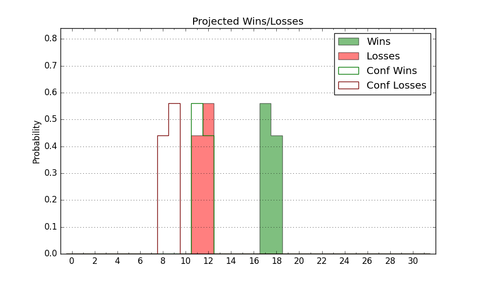

| Home | Game Probabilities | Conferences | Preseason Predictions | Odds Charts | NCAA Tournament |
| City: | Santa Barbara, California | |
| Conference: | Big West (5th)
| |
| Record: | 11-8 (Conf) 17-11 (Overall) | |
| Ratings: | Comp.: 4.2 (121st) Net: 4.2 (121st) Off: 110.1 (108th) Def: 105.9 (168th) SoR: 0.0 (110th) |
| Remaining | ||||||
|---|---|---|---|---|---|---|
| Date | Opponent | Win Prob | Pred. | |||
| 3/8 | UC Irvine (72) | 43.5% | L 67-69 | |||
| Previous | Game Score | |||||
| Date | Opponent | Win Prob | Result | Off | Def | Net |
| 11/9 | @Portland (274) | 69.7% | W 94-53 | 18.5 | 34.8 | 53.3 |
| 11/13 | Fresno St. (245) | 85.9% | W 91-86 | 1.1 | -9.1 | -8.0 |
| 11/17 | @San Jose St. (161) | 44.9% | W 64-59 | 2.1 | 11.1 | 13.2 |
| 11/20 | UTEP (143) | 70.3% | L 76-79 | 3.2 | -14.1 | -10.9 |
| 11/26 | Eastern Washington (260) | 87.6% | W 67-51 | -12.7 | 18.5 | 5.8 |
| 11/29 | Mississippi Valley St. (364) | 99.7% | W 81-48 | -1.4 | -2.5 | -3.9 |
| 12/5 | UC San Diego (39) | 26.6% | L 76-84 | 12.1 | -8.4 | 3.6 |
| 12/7 | @UC Davis (229) | 58.9% | L 60-71 | -10.3 | -8.0 | -18.3 |
| 12/14 | Green Bay (327) | 93.2% | W 83-66 | -10.3 | 6.8 | -3.5 |
| 12/18 | @Loyola Marymount (151) | 42.5% | L 58-60 | -15.1 | 16.3 | 1.2 |
| 12/22 | @Missouri St. (213) | 56.2% | L 56-68 | -9.9 | -20.7 | -30.7 |
| 1/2 | @Hawaii (208) | 55.4% | W 64-61 | -3.9 | 1.1 | -2.9 |
| 1/9 | Cal St. Bakersfield (248) | 86.2% | W 78-66 | -5.1 | 1.6 | -3.5 |
| 1/11 | @Cal Poly (207) | 55.1% | W 75-72 | 4.6 | -2.1 | 2.5 |
| 1/16 | UC Riverside (146) | 70.7% | W 66-63 | -8.3 | 6.2 | -2.2 |
| 1/18 | UC Davis (229) | 83.0% | L 60-64 | -2.8 | -17.3 | -20.1 |
| 1/23 | @UC San Diego (39) | 9.6% | L 63-77 | -3.7 | 5.5 | 1.8 |
| 1/25 | @Cal St. Fullerton (342) | 84.9% | W 83-75 | 8.3 | -16.0 | -7.6 |
| 1/30 | Cal St. Northridge (102) | 58.8% | L 71-78 | -0.2 | -7.4 | -7.6 |
| 2/1 | Long Beach St. (299) | 91.0% | W 85-54 | 4.9 | 17.1 | 22.0 |
| 2/6 | @Cal St. Bakersfield (248) | 64.7% | W 81-75 | 24.3 | -12.0 | 12.3 |
| 2/8 | Hawaii (208) | 80.9% | W 76-72 | -7.6 | -1.7 | -9.3 |
| 2/13 | @UC Irvine (72) | 18.4% | L 60-62 | 0.8 | 18.5 | 19.2 |
| 2/15 | @UC Riverside (146) | 41.5% | L 69-81 | 2.4 | -15.7 | -13.3 |
| 2/20 | Cal St. Fullerton (342) | 95.0% | W 86-56 | 11.0 | 5.5 | 16.5 |
| 2/22 | @Long Beach St. (299) | 74.7% | W 58-56 | -19.5 | 13.3 | -6.2 |
| 2/27 | Cal Poly (207) | 80.7% | W 96-77 | 8.6 | 5.4 | 14.0 |
| 3/1 | @Cal St. Northridge (102) | 29.5% | L 77-103 | 5.0 | -32.0 | -27.0 |
| Stats & Trends | |||||
|---|---|---|---|---|---|
| Current | Day | Week | Month | Season | |
| Composite | 4.2 | +0.0 | -0.7 | +1.9 | +3.0 |
| Comp Rank | 121 | -- | -9 | +14 | +13 |
| Net Efficiency | 4.2 | +0.0 | -0.7 | +1.8 | -- |
| Net Rank | 121 | -- | -9 | +14 | -- |
| Off Efficiency | 110.1 | +0.0 | +0.5 | +1.9 | -- |
| Off Rank | 108 | -1 | +5 | +21 | -- |
| Def Efficiency | 105.9 | +0.0 | -1.2 | -0.1 | -- |
| Def Rank | 168 | -- | -23 | +9 | -- |
| SoS Rank | 242 | +1 | +17 | +41 | -- |
| Exp. Wins | 17.4 | +0.0 | -0.2 | +0.7 | -1.8 |
| Exp. Conf Wins | 11.4 | +0.0 | -0.2 | +0.7 | -2.0 |
| Conf Champ Prob | 0.0 | -- | -- | -0.0 | -20.9 |

| Advanced Stats | ||
|---|---|---|
| Stat | Value | Rank |
| Off Eff FG % | 0.547 | 74 |
| Off Ast Ratio | 0.164 | 77 |
| Off ORB% | 0.270 | 237 |
| Off TO Rate | 0.161 | 277 |
| Off FT Ratio | 0.276 | 318 |
| Def Eff FG % | 0.495 | 124 |
| Def Ast Ratio | 0.137 | 96 |
| Def ORB% | 0.280 | 159 |
| Def TO Rate | 0.133 | 288 |
| Def FT Ratio | 0.310 | 131 |